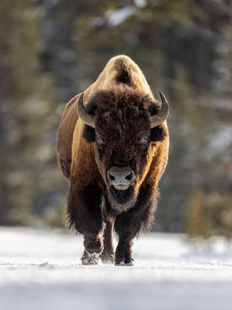
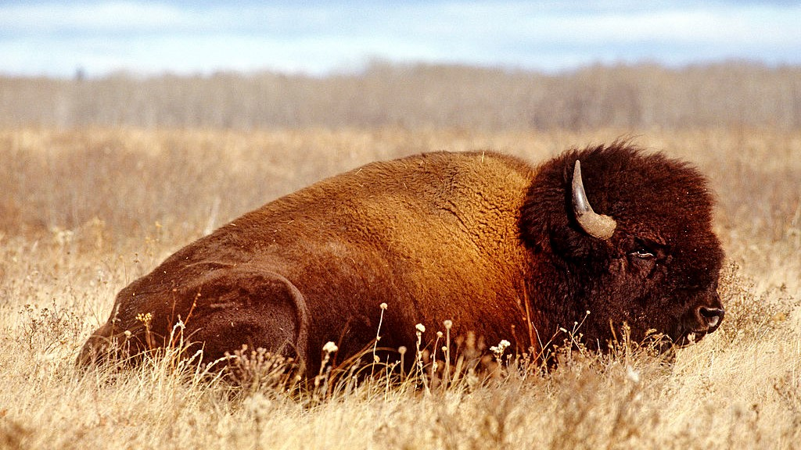

Our Work
Returning bison to their native range.
We focus on three conservation priorities in Canada and the United States.

Restore and steward herds
Support efforts to establish and care for conservation herds, including long-term monitoring, herd health, and stewardship.
Protect prairie habitat and expand bison range
Help protect and restore native grasslands and create more room for bison within their historical range, where habitat and local conditions support restoration.


Support Tribal-led buffalo restoration
Support restoration led by Tribal Nations, First Nations, and Indigenous organizations on their own terms and according to the priorities they set.
Discuss a conservation partnership